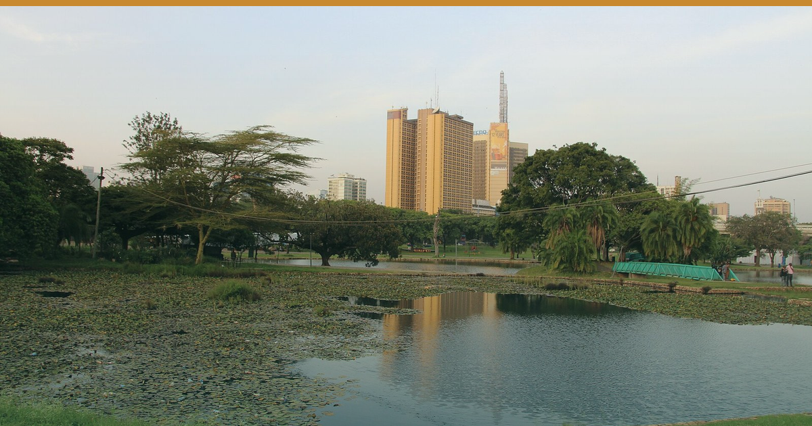

Photo: AEira-WMF · Wikimedia Commons · CC BY 4.0
MPs Move Against the KTB Super-merger — and the Ministry Reaches for the Levy.
Two governments moved on the tourism value chain today — Kenya over who controls its research, finance and levy money; Zanzibar over who is allowed to run the excursions.
1️⃣ 🇰🇪 MPs MOVE AGAINST THE KTB SUPER-MERGER — AND THE MINISTRY REACHES FOR THE LEVY
The Tourism (Amendment) Bill 2026 — which folds the Tourism Research Institute (TRI) and Tourism Finance Corporation (TFC) into the Kenya Tourism Board — hit resistance in committee today. The National Assembly's Tourism & Wildlife Committee (chair Kareke Mbiuki) opposed absorbing TRI, with coastal MPs (Kisauni, Lamu East, Voi) arguing it should be funded, not merged (Capital FM, 21 Aug). Separately, the Ministry of Tourism proposed splitting collection of the 2% Tourism Fund levy from management of the fund, expanding the Cabinet Secretary's oversight (allAfrica / Capital FM, 21 Aug).
🏷 City/Bush/Beach · Kenya · Confirmed (Capital FM / allAfrica, 21 Aug)
🎯 So what: TRI is the source of the arrivals-by-market and bed-night numbers you use to forecast yield and build DMC packages — losing its independence, or its funding, degrades the data you price on. And a levy whose collection and disbursement rules are being redrawn is a cash-flow and marketing-spend variable: Tourism Fund money underwrites destination and MICE marketing. Track the Bill's committee stage; don't assume either the merger or the levy mechanics land as first drafted.
2️⃣ 🇹🇿 ZANZIBAR ARRESTS THREE FOREIGNERS FOR RUNNING EXCURSIONS RESERVED FOR ZANZIBARIS
The Zanzibar Commission for Tourism and Immigration arrested three foreign nationals — including Kenyan businesswoman Esther Mutheu Samuka (with Mukembo Emmanuel and Karungi Scovia) — on 18 August for operating tour and excursion businesses reserved for Zanzibari citizens under the Tourism Act No. 6 of 2009. A public notice was issued 17 Aug (Citizen Digital / Kenyans.co.ke, 21 Aug).
🏷 Beach · Zanzibar · Confirmed (ZCT notice 17 Aug / press 21 Aug)
🎯 So what: The ground product on Zanzibar — excursions, spice tours, transfers — is legally reserved for locals. A regional DMC selling Zanzibar packages must run those legs through a licensed Zanzibari operator, not a foreign-owned entity, or risk arrest, a stranded guest and transfer liability mid-stay. Audit your island partners' licensing before the European peak, not during it.
━━━━━━━━━
✅ STILL TRUE — No EA advisory moved today. Kenya US Level 2; Uganda Level 4 (DRC-Ebola grounds); Tanzania & Zanzibar Level 3; Rwanda Level 3 (advisory board, verified 21 Aug).
⚡ COST PULSE — Nairobi diesel holds KSh 217.86/L to 14 Sep, ~KSh 14.28/L above landed-cost parity — refuse any supplier fuel surcharge (EPRA, 14 Aug).
🎤 MICE WATCH — 22 Aug Rwenzori Marathon, Kasese · 26–28 Aug Africa Global PR Week, Nairobi · 28 Aug WTA Africa Gala, Zanzibar · 4 Sep Kwita Izina, Musanze.
🔗 This edition on the web: eahospitalitypulse.com/editions/pulse-2026-08-21-evenin…
💼 Today's Big Read on LinkedIn: linkedin.com/company/ea-hospitality-pulse/
— EA Hospitality Pulse | Daily intelligence for city, bush & beach properties
📣 Telegram (full editions) 💬 WhatsApp (daily skim) 💼 LinkedIn (the Big Read) 🗂 Every edition